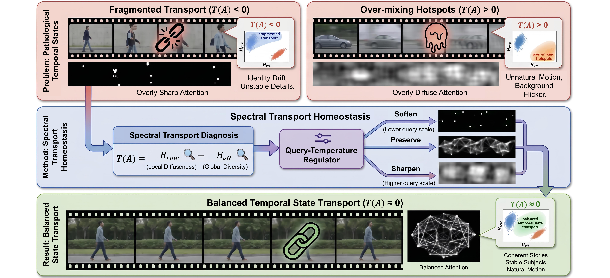

01
Local diffuseness
Hrow(A) = − avgi Σj Aij log(Aij + ε)
Row entropy measures how diffusely each frame distributes its temporal attention.
Diagnosing and Correcting Spectral Imbalance
ICML 2026 Workshop on From Frames to Stories (F2S)
Temporal attention does not fail in just one direction: it can become fragmented or over-mixed. TST is a training-free, diagnose-then-correct framework that restores balanced temporal transport—improving coherence, visual detail, and physical plausibility without finetuning.
We introduce Spectral Tension to diagnose whether temporal attention is operating in a balanced transport regime, and Spectral Transport Homeostasis to selectively correct pathological states at inference time. The result is improved temporal coherence, stronger visual quality, and more physically plausible videos without finetuning.
💡 Core insight
More cross-frame interaction is not always better. Temporal attention can fail in two opposite directions, so a useful intervention must first identify the failure regime and then apply the appropriate correction.
Existing training-free enhancement methods usually strengthen cross-frame interaction, but they do not reveal whether temporal interactions stay healthy. We instead view temporal attention as a transport operator whose balance determines whether a video remains coherent over time.
Spectral Tension compares local attention diffuseness with global spectral diversity. Negative values imply fragmented transport, positive values imply over-mixing hotspots, and values near zero indicate a better-balanced temporal state.
Spectral Transport Homeostasis is a training-free query-temperature regulator. It sharpens over-mixed states, softens fragmented ones, and preserves already balanced transport as much as possible.

🧮 Core formulation
TST reads temporal attention at two complementary scales, determines the failure direction, and applies a scheduled correction at inference time.
Row entropy measures how diffusely each frame distributes its temporal attention.
Von Neumann entropy summarizes the eigenvalue distribution of the normalized attention Gram matrix.
The effective strength τeff is scheduled across transformer layers and diffusion steps. The intervention is lightweight, adaptive, and controlled by one main parameter, τ (0.2 is the recommended paper setting).
Reliable video generation requires more than high-quality frames: a model must transport visual states such as identity, scene layout, motion, and fine details across time. Existing training-free methods mainly strengthen cross-frame attention or analyze local attention entropy, but these views do not reveal whether temporal interactions stay in a healthy transport regime. In this work, we study video generation through the perspective of Temporal State Transport.
We introduce Spectral Tension, a signed diagnostic that compares local attention diffuseness with global spectral diversity, and use it to identify two opposite temporal failures: fragmented transport and over-mixing hotspots. Based on this diagnosis, we propose Spectral Transport Homeostasis, a training-free regulator that softly corrects pathological temporal states while largely preserving balanced ones.
These examples emphasize appearance realism, fine structure, and stable scene detail that remain more convincing over time.
These examples emphasize dynamic scenes where the original model drifts into implausible physical behavior and where our method restores more coherent temporal structure.
Reference
If this work is useful for your research, please cite:
@misc{tang2026temporalstatetransportvideo,
title={Temporal State Transport in Video Generation: Diagnosing and Correcting Spectral Imbalance},
author={Luyao Tang and Bingjun Luo and Dong Yi and Jialin Guo and Haoning Xi and Cheng Chen and Yizhou Yu and Chaoqi Chen},
year={2026},
eprint={2609.08505},
archivePrefix={arXiv},
primaryClass={cs.CV},
url={https://arxiv.org/abs/2609.08505},
}